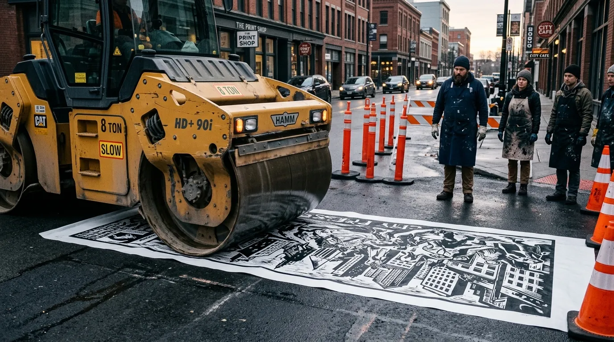
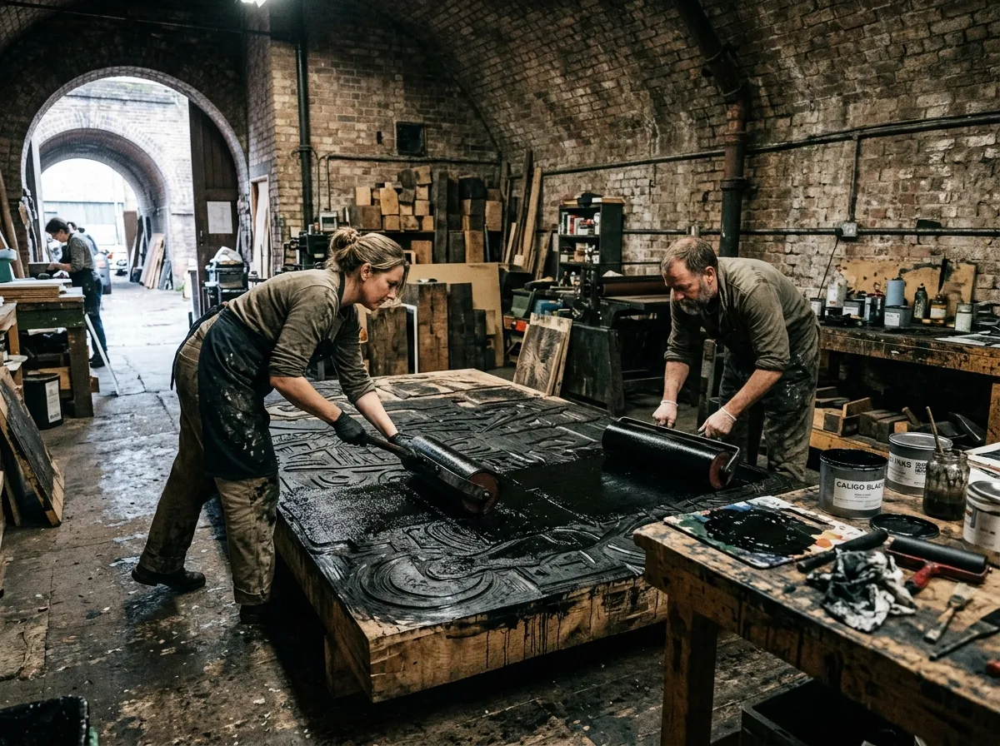
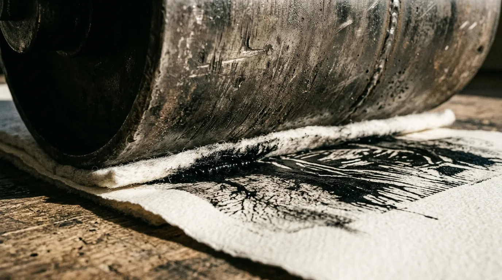
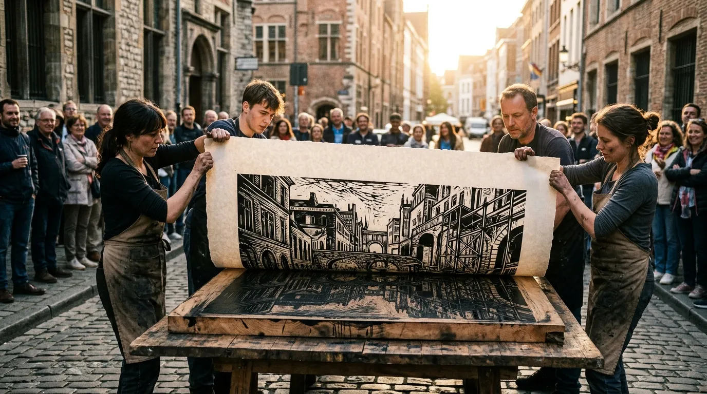

Four-Metre Woodcuts Pressed by Eight-Tonne Road Rollers.
An unholy alliance of fine-art printmakers and civil highway contractors printing colossal relief editions across closed British streets.
Gallery purists insist that serious relief printmaking belongs on century-old cast-iron proof presses tucked away in dustless university basements. We route monumental four-metre birch plywood matrices in our Leeds yard and roll them out on public asphalt at five in the morning using a vibrating twin-drum compaction roller. When eight tonnes of diesel-driven steel passes over saturated Somerset rag paper, you get hydraulic ink transfer that museum equipment cannot replicate and delicate collectors cannot ignore.
Primary Print DispatchThe Physics of Heavy Compaction
Traditional hand-cranked Vandercook and Albion platens max out at thirty pounds per square inch before their cast-iron frames risk micro-fracture. Our Bomag BW 120 vibratory tandem roller delivers four hundred and fifty pounds per square inch of linear ground pressure across a continuous one-metre steel drum. When rolling over 600gsm handmade cotton rag laid upon deeply gouged marine ply, that sheer tonnage forces viscous carbon black ink into the very marrow of the cellulose fibres, eliminating air voids and producing impenetrable, velvet-dense blacks.
Civil paving crews understand asphalt compaction; we simply swapped bituminous gravel for French printmaking ink and damp cotton rag. We schedule our major printing runs under municipal roadworks permits on quiet industrial access roads, treating the tarmac itself as the lower press bed. The neighbours complain about the diesel exhaust, the gallery directors wring their hands over our lack of archival tissue gloves, and the finished woodcuts require scaffolding just to hang on the wall.
Telemetry
The Highway Rolling Protocol
Spreading five kilograms of high-tack carbon black relief ink. Printmakers use 50cm industrial roofing brayers to build up a viscous, uniform layer of pitch across four metres of birch.

A deadweight pass to seat damp 600gsm cotton rag into deep router gouges, capturing the sheer tonnage required for flawless hydraulic ink transfer.

Four riggers simultaneously pulling the damp print off the wood matrix under dawn light, revealing flawless, opaque blacks pressed straight onto heavy paper.

Colossal Editions Currently in Inventory
These are physical architectural monuments, not delicate portfolio folder prints. Rigging hire is highly recommended for indoor installation.
The M62 Viaduct Triptych
- Dimensions: 420 × 180 cm (Three panels)
- Matrix: Finnish birch ply relief
- Edition: 12
- Context: Printed on Kirkstall Road during autumn resurfacing.
The Ferrybridge Cooling Tower Broadsheet
- Dimensions: 300 × 150 cm
- Matrix: Single plate, Somerset 600gsm velvet black
- Edition: 15
- Context: Capturing the explosive demolition silhouette.
The Westgate Pavement Monotype
- Dimensions: 240 × 120 cm
- Matrix: Direct relief impression
- Edition: 6
- Context: Pulled over cast-iron drainage covers and rough road scarification.
All prints shipped rolled inside 200mm industrial spiral steel tubes.
Field Transcripts & Council Warning Letters
I walked into their Leeds yard expecting delicate lino-cuts and left with diesel soot on my cuffs and tears in my eyes.
— Julian Sterling, Senior Curator, Northern Contemporary Gallery
Thought they were lunatics until I saw the absolute crispness of the letters printed straight under my Bomag roller drum.
— Dave 'Spud' Henderson, Plant Manager, West Yorkshire Plant Hire
We had to reinforce the Georgian townhouse drawing-room wall with structural steel brackets just to hang The Viaduct Triptych.
— Lady Camilla Thorne, Private Collector
Commission a Municipal Street Rolling Run
You supply the wall and the road permit; we supply the router, the birch timber, the diesel, and the roller.
Client Requirements
Minimum ceiling clearance of 3.5 metres. Site access required for an 8-tonne flatbed transport trailer. Local council road-closure coordination is the client's responsibility.
Booking Terms
Runs scheduled during spring and autumn road maintenance seasons only to accommodate bitumen setting temperatures.